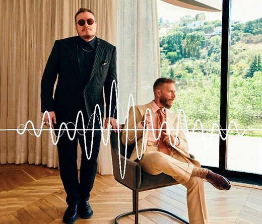
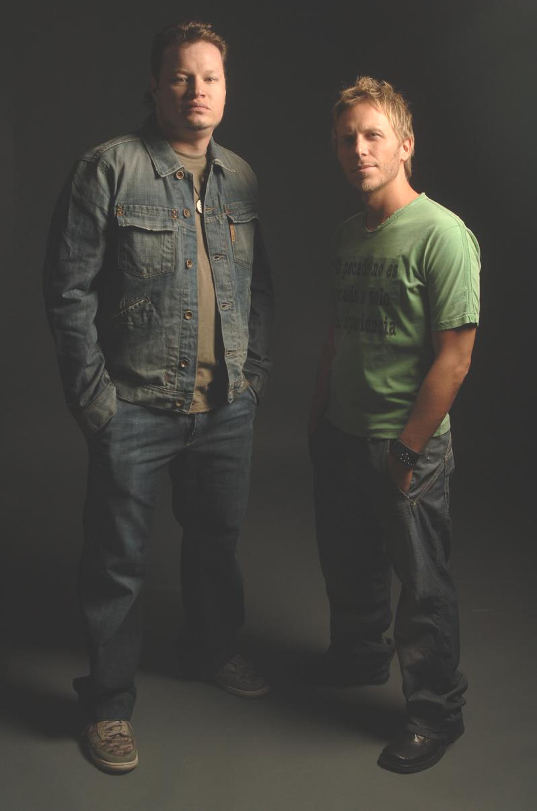
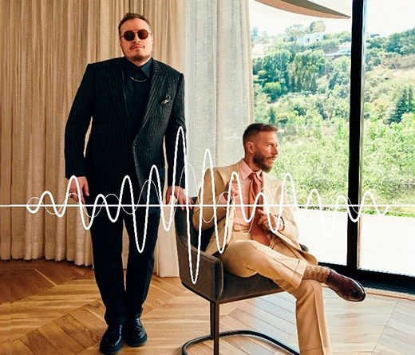
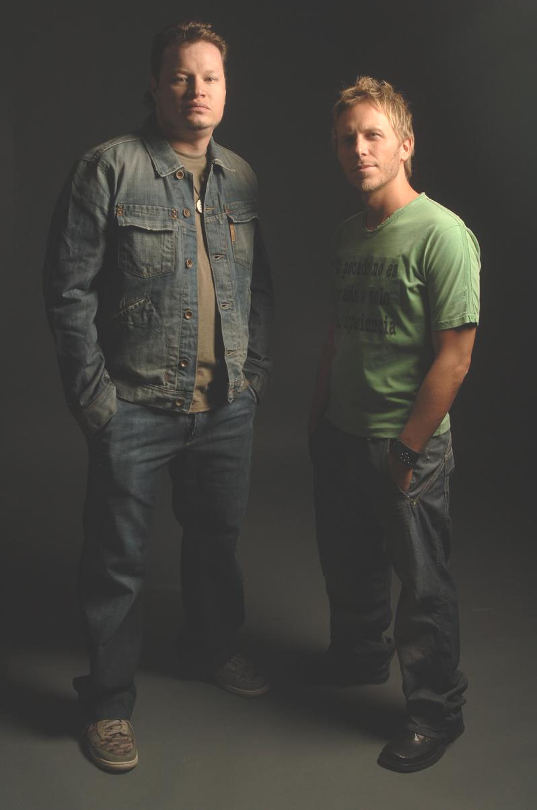

Quieres saber mas de lasso picale aqui
Andrés Vicente Lazo Uslar (Caracas, Venezuela, 18 de febrero de 1988) más conocido por su nombre artístico Lasso, es un cantante, actor y compositor venezolano. Andrés Lazo nació en el 18 de febrero de 1988 en Caracas, Venezuela, en el seno de una familia con raíces musicales. Sus padres son Henrique Lazo, conocido cantante, compositor y director venezolano y Carolina Uslar. Lasso culminó sus estudios primarios y secundarios en el Colegio Jefferson en Caracas. También estudió dos años la carrera de Ingeniería de Sistemas, en la Universidad Metropolitana en Caracas, Lasso finalmente detiene sus estudios, para dedicarse en su carrera como cantante. Lasso aprendió a tocar batería, guitarra y piano.
Martina Stoessel, conocida artísticamente como Tini, es una cantante, actriz y compositora argentina nacida el 21 de marzo de 1997 en Buenos Aires.Inició su carrera como actriz a los 10 años con un papel menor en la serie infantil argentina "Patito feo", y saltó a la fama mundial por la interpretación de Violetta, el personaje "estrella" de Disney Channel desde el 14 de mayo de 2012. Violetta es una chica adolescente con un talento muy especial para cantar, algo que ella desconoce. Este talento lo heredó de su madre, una famosa cantante que murió en un trágico accidente cuando Violetta era muy pequeña. En la historia, Violetta fue criada en Madrid, y unos años después, al regresar a Buenos Aires, descubre su bella voz
Hijos de José Luis Ortega Pineda y María Teresa Castro,1 José Luis y Raúl nacieron en Tulancingo, Hidalgo, el 17 de enero de 1981 y el 17 de julio de 1984, respectivamente. Desde pequeños mostraron interés por la música participando en festivales escolares y concursos de canto. José Luis decidió ampliar su carrera y se mudó a la Ciudad de México donde probó distintos géneros musicales y conoció a Leonel García, quien le instruyó en las labores de composición. Poco después, los hermanos decidieron desarrollar su carrera juntos.2 En 2008 iniciaron su carrera con el apoyo de Sony Music, comenzaron con un dueto llamado simplemente Josel y Raúl.3 Este disco homónimo de corte regional mexicano-romántico cuenta con 11 temas, todos de la autoría de José Luis y tres co-autorías de Raúl.4 El álbum fue producido por Junior Cabral
Los chicos de Morat se conocen desde los 5 años de edad, iban juntos en el colegio Gimnasio La Montaña , y algunos de ellos en la Universidad de los Andes.12 Comenzaron tocando juntos en varias ocasiones y cuando cursaban la secundaria3 Juan Pablo Isaza tomó la decisión de crear una banda. En el año 2014, la banda realizó una sesión de grabación en Bogotá.3 Un sitio al que concurrían mucho como músicos principiantes fue La Tea, donde en un inicio sus fanáticos eran el personal de seguridad. Y con el paso del tiempo empezaron a tener una audiencia propia. Simón Vargas contó esta anécdota respecto a ese lugar: "Recuerdo que teníamos un juego: cada vez que tocábamos en La Tea tratábamos de adivinar cuánta gente iba a vernos...Y, por lo general, llegaban más personas de las que esperábamos."3 En sus comienzos, no había grandes expectativas para la banda. En su primera reunión con el representante artístico Malaver, fueron rechazados después de que escuchara una de sus primeras composiciones. La respuesta que les dio fue la siguiente: "Creo que ustedes son talentosos, pero nunca tendrán una canción en la radio. Deberían haber nacido en Argentina a fines de los setenta, porque su música no es adecuada para lo que está sucediendo en este momento".3 Pero una vez que los escuchó tocar en vivo en La Tea tiempo después, Malaver quedó impresionado por el potencial de los chicos y se decidió por representarlos.
Leonel García tenía la idea de lanzarse como solista; sin embargo, su proyecto era rechazado por las discográficas. Al mismo tiempo, Noel Schajris debutó en 1991 como solista y luego 8 años más tarde con su álbum debut Cita en las nubes en 1999. El nombre Sin Bandera surgió por una ocasión en que García y Schajris iban en auto sobre una avenida principal por la Ciudad de México, al pasar por el campo ecuestre llamado Campo Marte, lugar que siempre luce una bandera de México, ese día solo se encontraba el mástil.3 Empezaron a escribir y grabar su álbum debut homónimo, Sin Bandera siendo lanzado al mercado el 26 de marzo de 2002, con la producción de Áureo Baqueiro.[cita requerida] En 2001 se lanzó el primer sencillo titulado «Entra en mi vida». Este fue usado como tema de la telenovela mexicana de TV Azteca Cuando seas mía (2001-2002), remake de la telenovela colombiana Café, con aroma de mujer.[cita requerida] Para la promoción del disco se lanzaron «Kilómetros» y «Sirena», como segundo y tercer sencillo del álbum. En 2002, fueron nominados a los Premios Grammy Latinos con su álbum debut Sin Bandera, como Mejor Nuevo Artista y Mejor Álbum por Dúo o Grupo Vocal, ganando este último en la entrega que se celebró en Los Ángeles, California, el 18 de septiembre de 2002.[cita requerida] En 2003 el dueto grabó el tema «Amor real», el cual serviría también como tema musical de la telenovela mexicana del mismo nombre, producida por Carla Estrada. Además, el grupo fue el encargado de abrir los conciertos de Alejandro Sanz en Estados Unidos y España.[cita requerida] El 21 de octubre de ese año, llega al mercado su segundo álbum de estudio De viaje, producido nuevamente por Áureo Baqueiro, que permaneció dieciséis semanas continuas en las listas de Billboard
 


